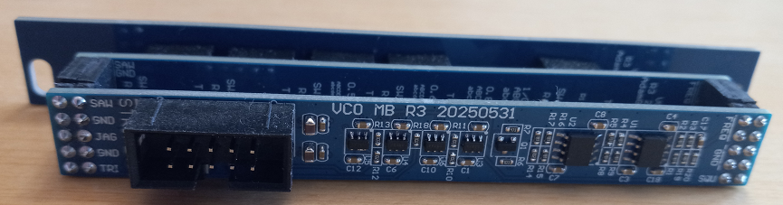

VCO
This page is under construction.
VCO is a Eurorack compatible Voltage Controlled Oscillator. It's based off of a magizine article I found from 1980. One input control voltage (CV) controls the frequency of four in-phase output voltage waveforms.
In a conventional system, the input would be from a sequencer that outputs a sequence of voltage that corresponds to the sequence of notes you want to play.
It can also be used as a Low Frequency Oscillator (LFO) by adjusting the value of the integrator's feedback capacitor.
Source
This project started at a hackathon when I was still in university. I wanted to build a functioning VCO so I looked up a few schematics, bought the components they used and a few other useful ones, packed up my lab, and spent the weekend bread boarding. I ended up getting it to work, but it was a bit of a challenge.
The schematic I chose to try building was originally published in Electronic Design Issue 9, April 26, 1980. (Link to original magazine article.) It turned out to have two seperate issues that prevented it from oscillating, which took a few hours to solve.
Description of Operation
The center of the circuit uses a common technique called a triangle core oscillator.
Basically, the comparator presents a DC voltage to the integrator, either positive or negative. The integral of a constant function is a line with a slope that's the same sign as the DC voltage. When the integrator reaches one of the comparator's thresholds, the comparator changes the sign of its outputs and the integrator's output starts going in the other direction. In other words, the comparator wind of causes the integrator output to bounce back and fourth like a ball between two walls.
The comparator must have some hysteresis on its input for the integrator to bounce between. If its just a single threshold, the integrator would hit it once and then saturate.
Note that the square wave amplitude is rail to rail, while the triangle amplitude is less - whatever you set the comparator threshold at.
The other two waveforms are manipulations of the TRI and SQU waves. For the SAW wave, the SQU wave is used to control whether the output is the original TRI wave or an inverted version of it. For the JAG wave(which I couldn't think of a better name for), the SQU wave is used to decide if the output is the TRI wave or nothing (grounded).
If I ever revisit this project, I might replace the JAG wave with a SINE wave that's shaped from the TRI wave. In a seperate project I've already worked out the math to get a high purity SINE shape.
Issues with Original Schematic
When I tried to build this circuit for the first time using the schematic from the magazine article at the hackathon, it didn't work. Fixing it was actually a pretty good debugging experience. Since the central circuit is a feedback loop, I had to break the loop a different places and artifically add the correct signal to get the circuit to operate and isolate the issues. If it started working when I broke the loop at a specific place, then it was likely the output of the circuit block before the break that was the issue.
It's been quite a while and I don't recall the details of the two issues I found. Broadly, the 555 timer was connected incorrectly to function as a schmitt trigger (I think I ended up just using an op-amp instead) and the BJT invertor wouldn't work until I removed one of the resistors.
I'm not going to go into too much depth on these issues since they're not present in my designs. I'll just leave this picture I found in my old files that made me laugh:
Version 1
This is actually the version I made after the hackathon (which was on a bread board), so I guess technically it's version 2? I think it's from before I started researching the eurorack format, so my only intention was to test it with lab bench equipment. Looking back, it has a lot of issues:
- It uses TH parts, which are large and harder to rework than SMT parts. I should have at least used sockets.
- The annular rings are too small to solder easily.
- Signal outputs are just wires soldered directly to the board instead of using a connector.
- It would have been really hard to debug, although if I recall correctly if just worked since it was based on the working breadboard prototype.
- Overlapping silkscreen markings, which is just sloppy.
- Power input pins unlabeled.
Some of those issues were caused by the lack of cheap PCB manufacturers. The best one I knew of at the time was OSHpark (you can see their iconic purple soldermask) and they charged $5 per square inch. On a student budget I was highly motivated to reduce board area. It's terrible for debugging, but I was happy with how compact I was able to get it.
Unfortunatly this is from before I started organizing my files well, so I don't have the original design documents.
Version 2
This was my first attempt to
Not every component has a 3D model. Started adding dates. The whole card form factor, not skiff friendly, requires crimping connectors to wires. It has a faceplate now! The proper dimensions to fit a eurorack system! I spent too much time finding the angle brackets and the proper length screws. Semi-standardized on the power connector becasue I thought the standard eurorack one was inefficient. Components are arranged a lot cleaner. Included jumpers between each circuit block to help with debugging.
Panel mounting holes are small and centered. Power connector is non-standard.Without ground planes to show routing.
Version 3
Why this revision? Differences from previous version. (eurorack skiff form factor, explain what those are) Also minimum width. Proper power connector. Slightly thinner (how much?) R2 was 4HP/0.8 inches
Motherboard
Schematic
If you'd like a schematic that's higher resolution and a normal aspect ratio, click here.
Minimum two pins per signal for reliability.
PCB
Lined up components neatly.
UI Board
Schematic
The UI board just connects the different UI elements (only jacks in this case) to the motherboard.
PCB
This board is pretty simple. In the last project I built I added a cat knocking a some text askew. This time the cat came back and is actually (messing) with component placement. I rotated the jack around the axis of its opening so the hole in the faceplate wouldn't be affected.
I also added a text size legibility test for future reference.
Faceplate
I'm not sure how much I like this faceplate design. Instead of labeling the jacks I added the actual waveshape around them. I couldn't think of what to do with the input, so I just superimposed all of the outputs. It's not a true circular transform because I didn't want to math that hard and I didn't think it would add that much.
I always find the idea of a set of modules with art that merges between each module really compelling. On this one, I think you could define 11 lines that go across the edges of each module and do interesting things in the center. They could either all use the smae motif or do different things (awk).
Assembly
Assembly was pretty straight forward. The thin aspect ratio made it easy to have 4 of them lined up and populate the same component on each one quickly.
Testing
Waveform Shape
Here's all 4 outputs at different frequencies. The higher frequencies round out a bit, but not an egreous amount. They're sharp at lower frequencies where you'd hear it in a LFO application.
54 Hz
1 kHz
5 kHz
8 kHz
13 kHz
Linearity
Extremely linear over a few volts. Very linear over its whole input range.
Is this 1V/oct? Shouldn't it be exponential then?
You can make this an LFO by increasing the integrator capacitor value. There's theoretically no lower limit on the frequency.
Cost Analysis
Per unit prices are for quantity 100 VCOs. All prices in CAD.
| MB | UI | FP | |
| Components | $7.53 | $2.86 | $0.00 |
| PCB | $3.06 | $0.55 | $0.57 |
| Total | $10.59 | $3.41 | $0.57 |
PCB Shipping: $22.82 USD/100 = 0.2282
Total device cost is $14.57 + PCB shipping of 0.2282 = $14.80 if I build 100.
Back to Projects